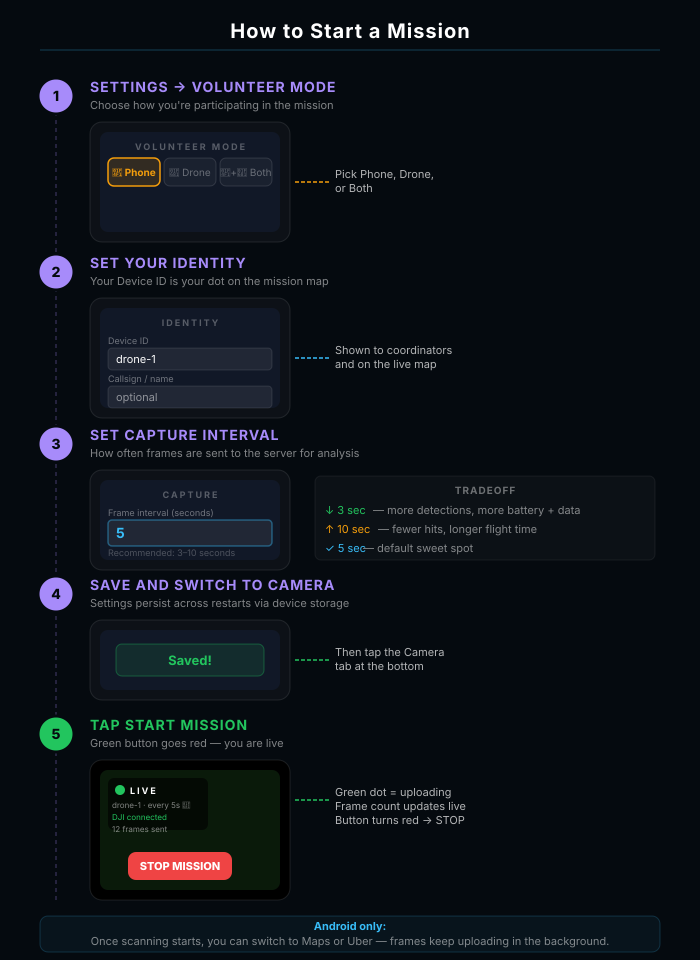
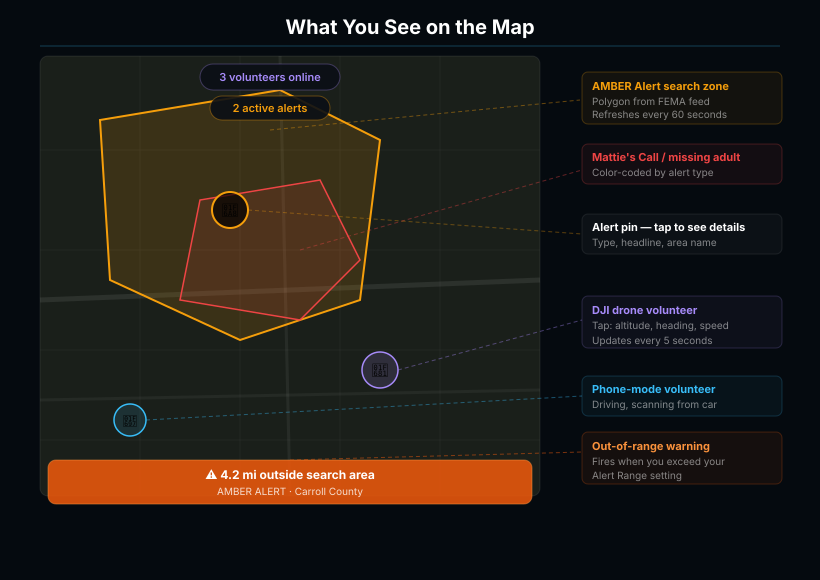

A distributed sensor network
for missing-persons response.
Architecture, scoring engine, FEMA pipeline, mobile runtime, and dashboard.
Idle by default. Activated by IPAWS.
The platform polls FEMA IPAWS every five minutes. Between alerts, the inference pipeline is fully idle — no continuous capture, no always-on scanning. When a qualifying alert fires, volunteers in the affected area are notified and the pipeline activates per-mission.
FEMA IPAWS
CAP XML polled every 5 min. Plate + vehicle profile parsed and written to watchlist.
Volunteers notified
Push to enrolled volunteers in alert polygon. Mount phone, tap START.
Unified worker
Drone RTMP + phone foreground service feed shared frame queue. ALPR + YOLO run per frame.
Composite confidence
5-second window. ALPR + YOLO corroboration. HIGH / PROBABLE / raw classification.
Coordinator gate
Discord webhook fires with full verdict. Human review before any LE notification.
Three planes. Strict boundaries.
Mobile client
React Native 0.81. Foreground Service for background scanning. GPS at ~1Hz.
Drone stream
nginx exec_push pipes JPEG frames into the unified worker. Same path as phone.
DJI MSDK 5.17
Native Kotlin module. Mavic 3, Mini 4 Pro, Air 3, Avata.
API + ingestion
POST /ingest/frame. JWT auth. slowapi rate limiting. Async SQLAlchemy.
Frame pipeline
One process. Shared queue across all sources. ALPR + YOLO + scoring.
Detection store
Events + watchlist + telemetry. Time-windowed retention. No raw video.
FEMA IPAWS
Public CAP feed. 5-min poll. Async background task on app startup.
Discord webhook
Full verdict embed: plate + confidence + frame + vehicle match.
Coordinator dashboard
Mapbox dark. /map · /admin · /missions · /leaderboard · /debrief.
One process. One frame queue.
Every source — drone RTMP, phone background service, phase-two DJI MSDK — feeds into the same in-process queue. No duplicated inference paths, no per-source forks. ALPR and YOLO see the same frames in the same order.
Sources
unified_worker.py
pid:worker · pm2-managedFrame queue (asyncio)
Shared across all sources. Backpressure-aware.
OpenALPR — plate text + confidence
Local inference. Fuzzy-matched against watchlist.
YOLOv8-nano — body type + dominant color
HSV K-means on upper 60% of bbox; confidence per frame.
Plate Recognizer (opt-in cloud)
Make/model enrichment on high-confidence reads only.
AggregationService → composite score
5-second window. ALPR + YOLO corroboration. Classification.
Outputs
Composite confidence — not just plate text.
Plate-only ALPR is roughly 30% false-positive in real-world conditions. We score every detection against two independent signals: ALPR text quality and YOLO vehicle corroboration. Both must agree before we open a HIGH_CONFIDENCE event.
Stored on every event as raw_summary.vehicle_corroboration — coordinators inspect exactly what contributed to the score.
Five-second window. Three classifications.
Detections grouped by drone and plate-prefix get fuzzy-matched together inside a five-second sliding window. The window decides whether the event opens for coordinator review, fires Discord, or stays a raw observation.
HIGH_CONFIDENCE
≥ 90.0PROBABLE
≥ 75.0RAW
< 75.0OCR confusion pairs · baked into fuzzy matcher
FEMA IPAWS → watchlist, automatically.
The connector polls IPAWS every 5 min. CAP XML is parsed for plate + vehicle profile (color, body type, make). Plates write to the watchlist; profile-only alerts (no plate) write to vehicle_targets so YOLO-only matching can still trigger.
Re-poll uses COALESCE upsert — a bare-plate entry gets backfilled with profile data if a later poll provides it.
# every POLL_INTERVAL_SECONDS (default 300) async def poll_ipaws(): xml = await http.get(FEMA_URL).text() for alert in parse_cap(xml): profile = extract_vehicle(alert.description) plates = extract_plates(alert.description) if plates: for p in plates: await watchlist.upsert( plate=p, color=profile.color, body_type=profile.body, make=profile.make, ) # COALESCE — backfill on re-poll elif profile.has_attrs(): await vehicle_targets.insert(profile) await dispatcher.notify_volunteers( polygon=alert.polygon, cap_code=alert.cap_code, )
Push lands → mission start in two taps.

IPAWS-driven · geofenced · single action
When IPAWS issues an alert in the volunteer's polygon, an Expo push notification fires. They see the suspect descriptor, alert ID, last-known direction — and one tap to start.
- 01Geofenced push — only volunteers inside the alert polygon are notified
expo-notifications - 02Suspect descriptor — vehicle make/color/body parsed from CAP and shown verbatim
- 03Single-action start — no menus; tap to enter
CameraScreenwith foreground service running - 04Auto-stop on alert clear — IPAWS cancellation pushes a stop-mission state to active devices
Lock the phone. Keep scanning.

Android Foreground Service · persistent notification
The flagship piece of the mobile stack. modules/phone-camera runs Camera2 + GPS + upload as an Android Foreground Service so the user can drive with their navigation app open. AA does not need to be visible.
- 01Foreground service — Camera2 +
expo-locationstay alive when screen off / app backgrounded - 02Persistent notification — live frame count + one-tap Stop without unlocking
- 03Per-frame upload — POST
/ingest/framewith GPS attached at ~1Hz - 04Out-of-range warning — fires when volunteer drifts outside the alert polygon
DJI MSDK 5.17. Same pipeline.

Pair · authenticate · sync · confirm
modules/dji-camera is a native Kotlin module wrapping DJI MSDK V5. Mavic 3, Mini 4 Pro, Air 3, Avata supported. Drone video flows the same RTMP path as today — the unified worker treats it identically.
- 01Native MSDK 5.17 — Kotlin module under
mobile/modules/dji-camera - 02Same cascade pipeline — drone frames hit the unified worker exactly like phone frames
- 03GPS-tagged events — drone telemetry attached to every detection
- 04Part 107 gating — pilot certificate verified on account before flight-mode unlocks
Live mission map. Tiered visibility.

Next.js 14 · Mapbox dark · role-tiered
Three roles, three views. Pilots see their own track + flight priority zones. Coordinators see bucketed Flock coverage (0 / 1–3 / 4+ — never raw camera positions). Admins see everything plus pilot approvals + test alert injection.
- 01Flight priority zones — high-priority cells where Flock has 0 coverage; medium where 1–3
- 02Detection markers — amber detected · red watchlist hit · density heatmap
- 03Routes —
/map·/missions·/admin·/leaderboard·/debrief - 04Out-of-range fence — drift outside polygon fires haptic + visual warning
What we depend on, and what we own.
Every external dependency was chosen so the system is auditable and self-hostable. The ML stack is open-source end-to-end. Self-hostable on any Ubuntu 20.04+ VPS with PostgreSQL, Node 18+, Python 3.10+.
FEMA IPAWS
Public CAP feed. AMBER, Silver, Mattie's, Purple, MIPA, EMA, Blue. 5-min poll.
OpenALPR + YOLOv8-nano
Local ALPR + body-type classification. HSV K-means for color. All open-source.
Plate Recognizer (opt-in)
Cloud make/model enrichment on high-confidence reads. Quota-conserved.
DJI MSDK 5.17 (phase 2)
Native Kotlin. Mavic 3, Mini 4 Pro, Air 3, Avata. Part 107 gated.
Expo + React Native 0.81
Bare workflow. EAS Build cloud — no Mac required for iOS. OTA via expo-updates.
FastAPI + PostgreSQL
Async SQLAlchemy. JWT (passlib + python-jose). slowapi rate limit. PM2 supervised.
Next.js 14 + Tailwind
Mapbox GL dark. Server actions for mission management. Live event feed via polling.
Discord webhooks
Coordinator alerts. Embed: plate + confidence + frame + vehicle match verdict.
DigitalOcean + nginx + Certbot
Single Droplet, self-hostable anywhere. nginx reverse-proxy. Let's Encrypt TLS.
Enforced by the topology, not by policy.
There is no write path to disk for raw video frames. Frames hold in RAM only for inference duration. The platform is event-triggered — between IPAWS alerts, the inference pipeline is fully idle.
Telemetry purges after 90 days. Detection records after 1 year. The watchlist contains only plates from active government alerts — never our own database of plate sightings.